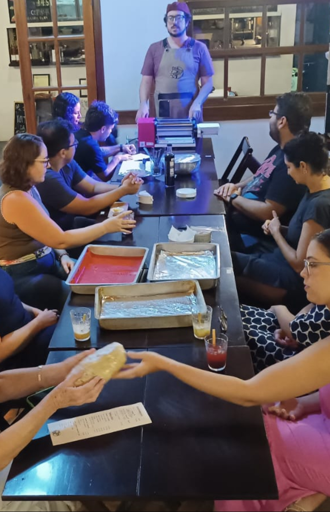
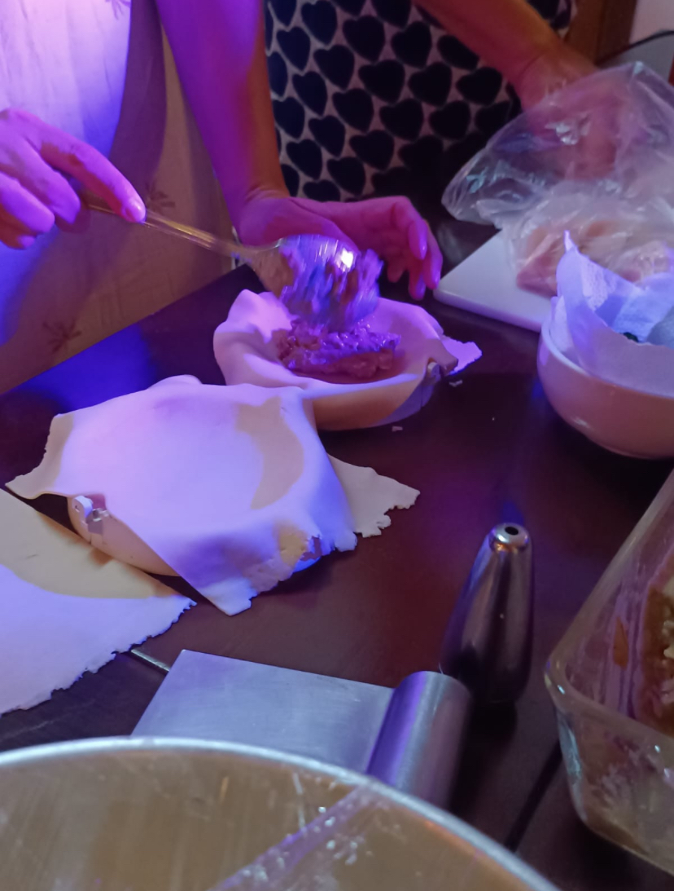
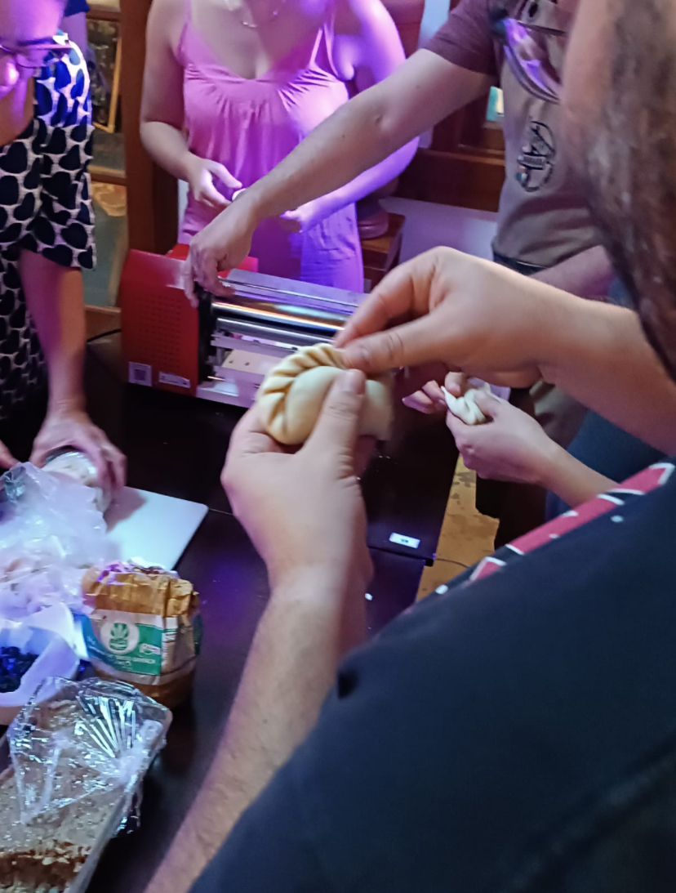
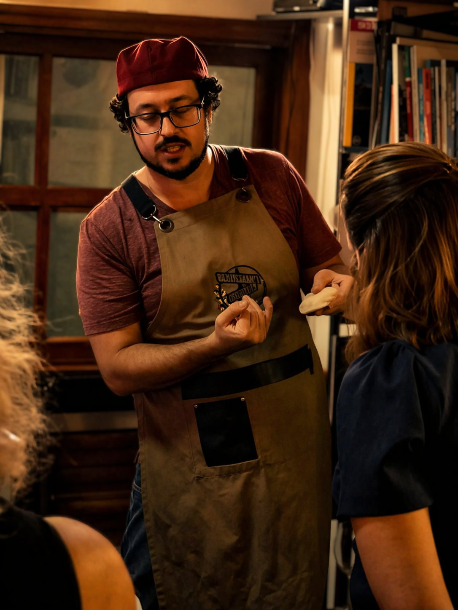
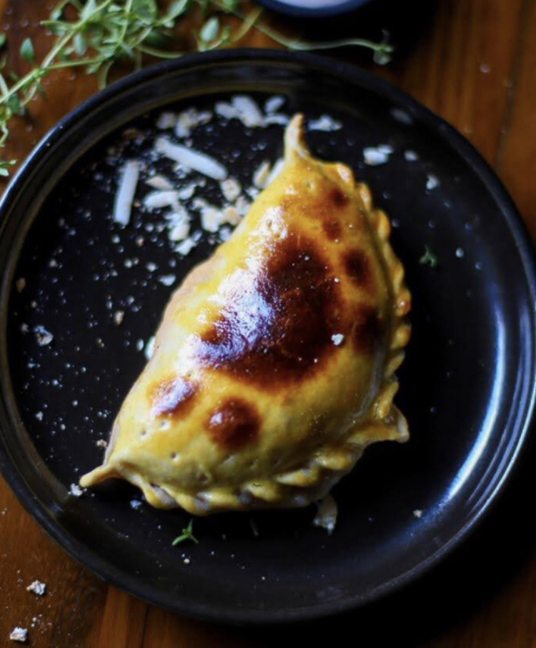
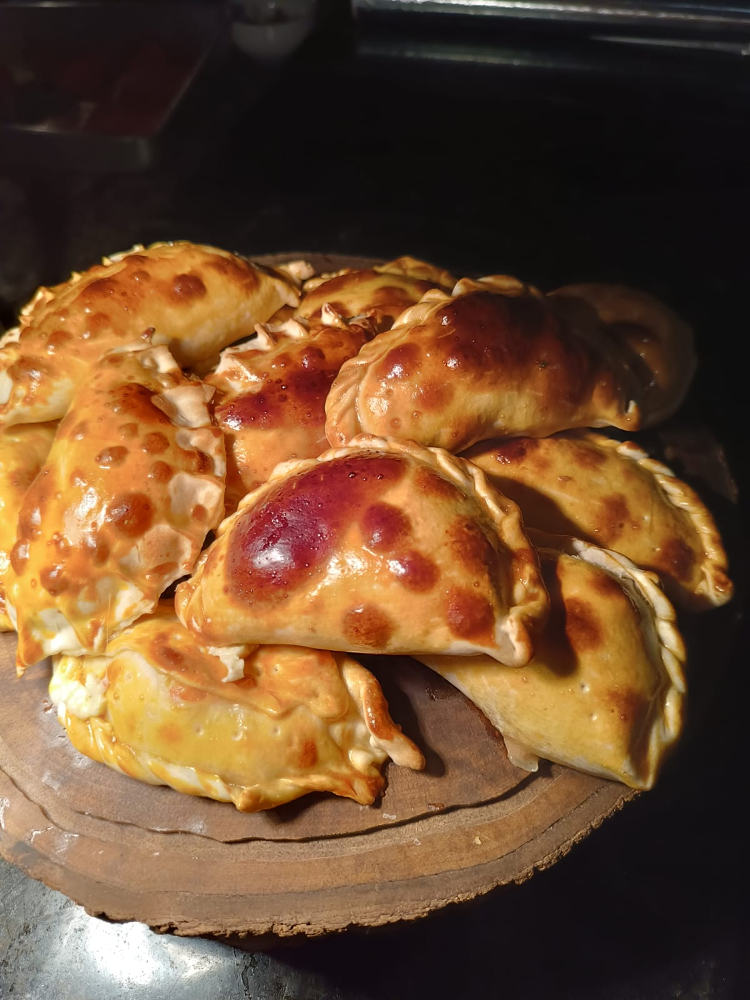

Uma massa feita com as próprias mãos
Vamos perceber textura, ponto e descanso e entender como abrir a massa para receber o recheio.
Massa aberta sobre a mesa, recheios para combinar, mãos trabalhando e gente para conhecer.
O Cozinhando Juntos: Empanadas é uma experiência intimista para poucas pessoas, reunidas em volta de uma mesma mesa para cozinhar, conversar e jantar juntas.
Começamos entendendo a massa: textura, ponto, descanso e abertura. Depois entram os recheios, as combinações e uma das partes mais gostosas do processo — montar, fechar e dar forma a cada empanada com as próprias mãos.
Enquanto isso, a conversa acontece. Pessoas chegam sozinhas ou acompanhadas, dividem a bancada, trocam ideias, ajudam umas às outras e, pouco a pouco, deixam de ser desconhecidas.
No final, as empanadas vão ao forno e voltam para o centro da mesa.

Vamos perceber textura, ponto e descanso e entender como abrir a massa para receber o recheio.
A experiência continua experimentando sabores e entendendo como construir uma empanada equilibrada.
Montar, dobrar e fazer o acabamento também fazem parte do aprendizado. Cada pessoa acompanha sua empanada ganhando forma diante dela.
Cozinhar junto cria assunto com facilidade. A bancada vira espaço para conversar, trocar experiências e fazer novas conexões.
Algumas experiências ficam melhores quando o preparo vem para o centro da mesa.
No Cozinhando Juntos, todo mundo participa: pesa, mistura, abre, recheia, modela, pergunta, observa o que o outro está fazendo e compartilha pequenas descobertas durante o processo.
É também uma maneira muito natural de conhecer pessoas. A atividade tira o peso de “ter que puxar assunto”: há sempre alguma coisa acontecendo entre as mãos e alguma conversa surgindo ao redor dela.
A cozinha cria o encontro. A mesa prolonga a conversa.
Você pode vir com amigos, em casal ou sozinho.




O que começou nas mãos termina no centro da mesa.
Tudo começa com uma massa ainda sem forma.
Primeiro, trabalhamos textura, ponto e descanso. Depois, cada participante abre sua massa e começa a experimentar os recheios.
A partir daí, cada empanada vira uma pequena construção: quantidade de recheio, dobra, fechamento e acabamento.
Pouco a pouco, a bancada vai se enchendo.
Então elas seguem para o forno.
Aquilo que cada pessoa preparou individualmente volta como uma travessa para ser compartilhada por todos.

Empanada é uma comida especialmente boa para compartilhar.
Depois de entender a massa, os recheios e o fechamento, você pode reproduzir o processo em casa e transformar o preparo em um programa: colocar os ingredientes sobre a mesa, chamar amigos ou família e deixar que cada pessoa monte a sua.
Mais do que aprender uma receita, você aprende um jeito de reunir pessoas em volta da cozinha.
A experiência é a mesma para todos. Você escolhe o valor de acordo com sua realidade e com o quanto deseja apoiar a continuidade do projeto.
Cobre o básico necessário para que a experiência aconteça e garante sua participação.
Escolher R$ 90Um valor mais equilibrado, que ajuda a sustentar o projeto e suas próximas experiências.
Escolher R$ 150Para quem pode contribuir um pouco mais e fortalecer a continuidade do Cozinhando Juntos.
Escolher R$ 18024 de novembro de 2026 · Paulistânia Desvairada / Restaurante Tio Dinho · Rua João Leone, 51 · Sousas · Campinas.
Não. O aprendizado acontece pela prática, com orientação ao longo do processo.
Sim. O grupo pequeno e a própria dinâmica de cozinhar junto facilitam muito a integração entre as pessoas.
Sim. O grupo assa e depois janta junto as empanadas preparadas durante a experiência.
A experiência é a mesma para todos. O valor mínimo cobre o básico da produção; o moderado ajuda a sustentar o projeto e suas próximas experiências; e o incentivo fortalece ainda mais a continuidade do Cozinhando Juntos.
Sim. Também vendemos bebidas no local. Se preferir trazer a sua, cobramos taxa de rolha de R$ 25 por garrafa.
Sim. A proposta é que você saia entendendo o processo o suficiente para recriar a experiência em casa com amigos ou família.